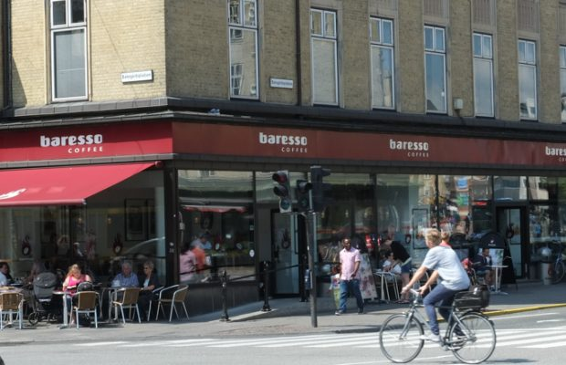
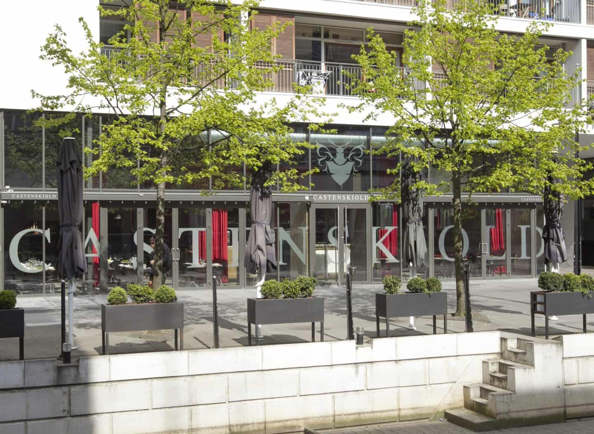
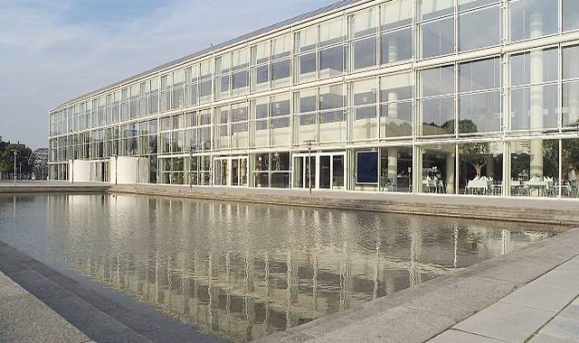
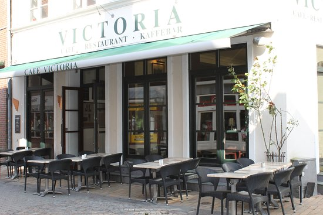
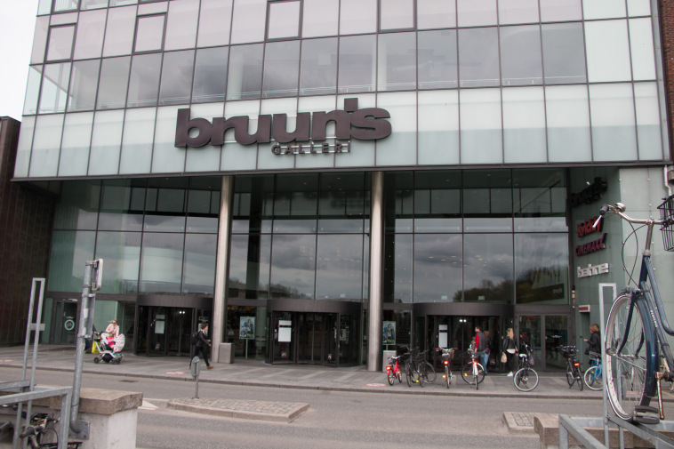

5 Handicap venlige steder i Aarhus
Er du en af de nye studere der er flyttet til byen og leder du efter nogle handicapvenlige steder at besøge, så har vi lavet en liste med nogle af de bedste steder. Vi har været ude at finde 5 fantastiske steder at besøge, selv man er blind, døv eller sidder i kørestol.
Baresso Coffee – Banegårdspladsen 16, Aarhus C
Billede: (aarhusupdate, 2014)
Vores første sted er en Baresso kaffe bar, lige over for banegården. Den ligger 50 m fra en parkerings plads, og har en god atmosfære. Det er en hyggelig kaffebar med mange forskellige typer kaffe og kage. Den er også nem at manérer med en kørestol, da der er store gange igennem hele butikken. Ved entréen findes også en rampe man kan bruge til at komme ind. Kaffebaren gør ikke præg af at der er travlt, for personalet er flinke og gode til at betjene. Det eneste sted, man skal være lidt varsom er hvis man skal på toilettet, for der er gangen lidt smal. (Dansk Handicap Forbund, 2019)
Castenskiold – Åboulevarden 32, Aarhus C
Billede: (Vestervig, 2018)
Castenskiold er et rigtigt fint sted at spise frokost eller aftensmad, med udsigt direkte ud til åen. De har virkelig mange lækre og forskellige slags retter, til både vegetarer og kødelsker. Er du typen der kan lide et glas vin til din aftensmad eller frokost, så har de deres egen vinlager, man kan vælge fra. Deres toilet ligger i kælderen, men det er ikke noget problem at komme til, da de har er en elevator til kælderen. (Dansk Handicap Forbund, 2019)
Musikhuset – Thomas Jensens Allé 2, Aarhus C
Billede: (Johansen, 2014)
Musikhuset har mange forskellige events, og har også nogle gange gratis koncerter, man kan komme til. Det er samtidig et rigtigt handicap venlig, for der er invalide parkeringspladser ved indgangen, speciale døråbner for kørerstolebruger, en elevator der giver en adgang til de 3 niveauer og yderst handicapvenlige toiletter på hver etage. I deres sale er der monteret teleslynge til de svagthørende og Tagarno til de svagt seende, som giver dem en skærm og et kamera de kan bruge til at se med. I musikhusets nye sale er der 12 kørestolspladser med mulighed for flere. (Dansk Handicap Forbund, 2019)
Restaurant Victoria – Jægergårdsgade 9, Aarhus C
Billede: (tripadvisor, 2019)
Restaurant Victoria er ejet af en kørerstolsbruger, og lægger derfor meget vægt på brugen af kørestole i restauranten, hvilket man godt kan se. Der er niveaufri indgang og et stort toilet bag i restauranten. Restauranten har fint og billig mad, med spændene retter på menuen. Restauranten har en god atmosfære og gode pladser til kørestole. (Dansk Handicap Forbund, 2019)
Bruns Galleri – M.P. Bruunsgade 25, Aarhus C
Billede: (langweekendaarhus, 2015)
Har man været i Aarhus kender man nok til Bruns Galleri, et storcenter, som ligger i forlængelse af banegården. På den anden side ligger der et par invalide parkeringspladser, og en elevator ved den nærmeste indgang. Der findes et toilet på hver etage et ved indkøbsområdet og et ved Cinemaxx på 2. sal. Bruns Galleri indeholder alle slags butikker, man mangler. Tøjbutikker, caféer, supermarked, restauranter og en biograf. Biografen Cinemaxx har 2 pladser foran i den store sal og 2 pladser bagved i de mindre sale til kørestole. (Dansk Handicap Forbund, 2019)
Kilder
aarhusupdate, 2014. Kaffebar i Århus: Baresso Coffee - Banegårdspladsen. Aarhus Update - Spis | Drik | Det
sker | Fest | Sov godt. Available at:
https://aarhusupdate.dk/mad/baresso-coffee-banegaardspladsen/
[Accessed 26 Oct. 2019].
tripadvisor, 2019. Café Victoria, Tønder - Restaurantanmeldelser - TripAdvisor. [online] tripadvisor.dk.
Available at:
https://www.tripadvisor.dk/Restaurant_
Review-g774853-d3446031-Reviews-Cafe-Victoria-Toender_South_Jutland_Jutland.html
[Accessed 26 Oct. 2019].
Dansk Handicap Forbund, 2019. Byguide - Tilgængelighedsbasen. [online] tbasen. Available at:
http://tbasen.dk/steder.php?by1=%C5rhus&landenavn_da= Danmark&byguide=1#Musiksteder
[Accessed 20 Oct. 2019].
Johansen, C.S., 2014. Oplev Brødrene Olsen i Musikhuset. [online] aarhus.lokalavisen.dk. Available at:
https://aarhus.lokalavisen.dk/
nyheder/2014-10-31/-Oplev-Br%C3%B8drene-Olsen-i-Musikhuset-1466900.html
[Accessed 26 Oct. 2019].
Vestervig, J., 2018. Castenskiold er gået konkurs: - Vi havde for høje ambitioner. [online] Available at:
https://stiften.dk/artikel/castenskiold-er-g%C3%A5et-konkurs-vi-havde-for-h%C3%B8je-ambitioner
[Accessed 26 Oct. 2019].